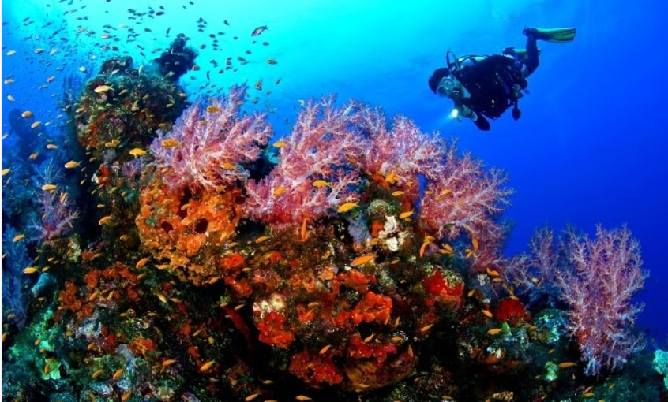
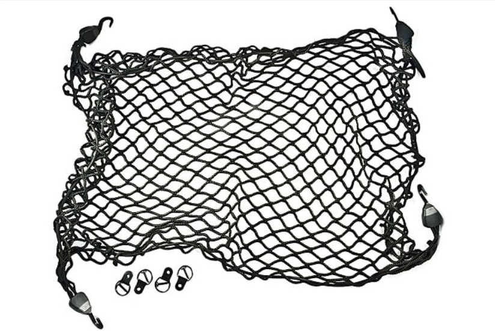

120 từ vựng tiếng Anh về chủ đề thể thao thường dùng nhất
Nếu bạn là một người đam mê học Tiếng Anh và yêu thích các môn thể thao thì mình tin chắc là bạn sẽ thích nội dung mà mình sắp đề cập dưới đây. Ok ! ngay bây giờ, mời bạn cùng mình tìm hiểu vài loại từ vựng tiếng Anh về chủ đề thể thao nhé.
Học tiếng Anh theo chủ điểm là một cách tiếp cận nhanh nhất và thông minh nhất để nhớ các cụm từ và từ vựng đặc trưng. Có thể ở thời điểm hiện tại bạn chưa thấy được tầm quan trọng của việc học các cụm từ theo từng lĩnh vực đâu.
Tuy nhiên, khi bước vào các kỳ thi Tiếng Anh quan trọng, bạn sẽ thấy được việc tìm hiểu trước các đề tài là một việc quan trọng đến mức nào.
Vâng, bài viết sau đây sẽ mang tới cho bạn 120 từ và cụm từ tiếng Anh về chủ đề thể thao, rất dễ nhớ, dễ sử dụng và nó thường xuyên suất hiện trong cuộc sống thường ngày.
Các bạn cố gắng nhớ càng nhiều càng tốt ha (>‿♥)
#1. Từ vựng của các môn thể thao trên cạn
- Hiking: Đi bộ đường dài, khúc côn cầu
- Handball: Bóng ném
- Golf: Đánh gôn
- Aerobics: Thể dục nhịp điệu
- Football: Bóng đá
- Athletics: Điền kinh
- Basketball: Bóng rổ
- Baseball: Bóng chày
- Badminton: Cầu lông
- Archery: Bắn cung
- Bowls: Ném bóng gỗ
- Cycling: Đua xe đạp
- Gymnastics: Tập thể hình
- Horse racing: Đua ngựa
- Horse riding: Cưỡi ngựa
- Jogging: Chạy bộ
- Judo: Võ judo
- Pool: Đánh bi-a
- Rugby: Bóng bầu dục
- Running: Chạy đua
- Shooting: Bắn súng
- Motor racing: Đua xe mô tô
- Kick boxing: Võ đối kháng
- Netball: Bóng rổ nữ
- Martial arts: Võ thuật
- Body building: Thể dục thể hình
- Hunting: Đi săn
- Yoga: Tập yoga
- Weightlifting: Cử tạ
- Wrestling: Đấu vật
- Volleyball: Bóng chuyền
- Table tennis: Bóng bàn
- Skiing: Trượt tuyết
- Go fishing: Câu cá
- Skateboarding: Trượt ván
- Squash: Bóng quần
- Snowboarding: Trượt tuyết ván
- Ice skating: Trượt băng
- Darts: Ném phi tiêu
#2. Từ vựng của các môn thể thao dưới nước
- Windsurfing: Lướt ván buồm
- Water skiing: Lướt ván nước tàu kéo
- Water polo: Bóng nước
- Swimming: Bơi lội
- Surfing: Lướt sóng
- Sailing: Chèo thuyền
- Scuba diving: Lặn có bình khí
- Rowing: Chèo thuyền
- Diving: Lặn
- Canoeing: Chèo thuyền ca-nô
- Beach volleyball: Bóng rổ bãi biển
- Wakeboarding: Lướt sóng có thuyền kéo
- Synchronized swimming: Bơi nghệ thuật
#3. Thuật ngữ tiếng Anh về thể thao
- Lifebuoy: Phao cứu sinh
- Goggles: Kính bơi
- Wetsuit: Bộ đồ lặn
- Bodyboard: Ván lướt nằm sấp
- Life jacket: Áo phao
- Tetrathlon: Bốn môn thể thao kết hợp (cưỡi ngựa, bắn súng, chạy, bơi lội)
- Surfboard: Ván lướt sóng
- Swimming pool: Bể bơi
- Gym: Phòng tập thể hình
- Boxing ring: Võ đài quyền anh
- Tennis court: Sân tennis
- Ice rink: Sân trượt băng
- Golf course: Sân gôn
- Cricket groundz: Sân crikê
- Squash court: Sân bóng quần
- Racetrack: Đường đua
- Running track: Đường chạy đua
- Brake: Phanh xe đạp
- Bell: Chuông
- Bicycle pump: Bơm xe đạp
- Wheel: Bánh xe
- Tyre: Lốp xe
- Pedal: Bàn đạp
- Saddles: Yên xe
- Spokes: Nan hoa
- Chain: Xích
- Inner tube: Xăm
- Puncture: Thủng xăm
- Gears: Bánh răng
- Triathlon: Cuộc đua thể thao ba môn kết hợp (bơi, đua xe đạp, chạy)
- Half-time: Giờ nghỉ hết hiệp một (bóng đá)
- Header: Cú đánh đầu